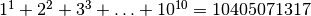
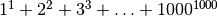
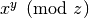
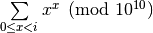

Self powers¶
Problem 48
The series, .
Find the last ten digits of the series, .
Solution
Fast .
def expMod( x, y, z ):
if y == 0:
return 1
elif y % 2 == 0:
return expMod( (x*x)%z, y//2, z )
else:
return (x*expMod( x, y-1, z )) % z
Compute  to keep only the last 10 digits.
def sumExpMod( i ):
"""
>>> from euler48 import sumExpMod
>>> sumExpMod( 10 )
405071317
"""
s= 0
for v in range(i):
e= expMod( v+1, v+1, 10000000000 )
#print v, e
s += e
return s % 10000000000
Test the module components.
def test():
import doctest
doctest.testmod(verbose=0)
assert 405071317 == sumExpMod( 10 )
Create the answer.
def answer():
return sumExpMod( 1000 )
Confirm the answer.
def confirm(ans):
assert 9110846700 == ans, "{0!r} Incorrect".format(ans)
Create some output.
if __name__ == "__main__":
test()
ans= answer()
confirm(ans)
print( "The last ten digits of the series:", ans )